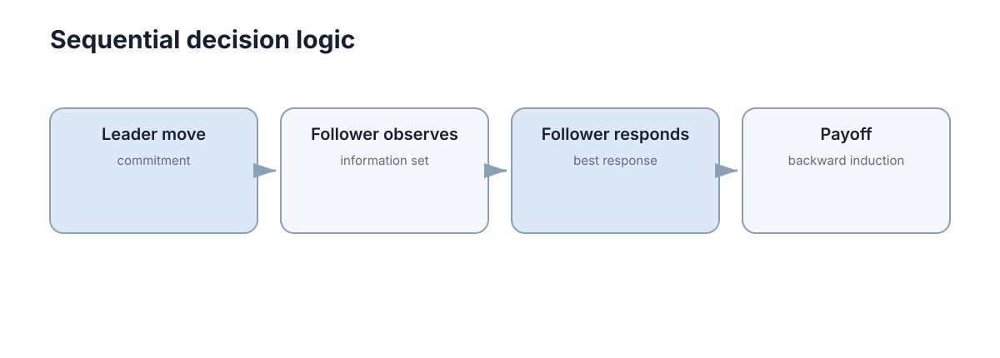

Sequential & Bayesian Games
现实决策经常同时叠加两种复杂性：有人先行动、有人后行动，同时玩家又可能不知道对方的真实类型或成本。序贯博弈解决的是「谁先动、后手知道什么」的行动顺序问题，贝叶斯博弈解决的是类型与信念的隐藏信息问题，两者必须分开建模再组合。 本页先用博弈树和逆向归纳处理顺序，再引入类型、先验与后验处理信息，最后给出承诺可信度、信息设计的代价，以及两者同时出现时的建模链条。

顺序行动要用博弈树描述历史
博弈树用节点表示历史 \(h\)，用边表示可选动作 \(a\)，用叶节点给出各玩家的最终收益。节点的「历史」是从根到该节点的一条动作序列，例如 \(h = (a^1, a^2)\) 表示玩家 1 先做了 \(a^1\)、玩家 2 接着做了 \(a^2\)。
关键区别在于策略的定义。在同时行动的标准式里，策略就是一个动作；在扩展式里，策略是「玩家在自己可能遇到的每一个决策节点上分别怎么行动」的函数：
这意味着策略空间是各节点动作集合的笛卡尔积，规模随决策点数量指数增长。若某玩家有 \(k\) 个决策节点、每个节点 \(2\) 个可选动作，则其纯策略总数为 \(2^{k}\)；当 \(k = 10\) 时就是 \(1024\) 条策略。博弈树的价值也正在此处：它把「后手能看见先手动作并据此响应」这件事显式写进了结构，而不是留给求解器去猜。
为避免策略空间爆炸，实践中常改用行为策略（behavioral strategy）：在每个信息集上独立指定一个概率分布，而不是对整条纯策略整流形做混合。二者在完美回忆（perfect recall）的博弈中等价，这也是序贯均衡能够直接定义在信息集上的前提。
| 表达形式 | 行动时机 | 策略的粒度 | 天然支持的均衡概念 |
|---|---|---|---|
| 标准式矩阵 | 同时 | 单个动作 | Nash 均衡 |
| 扩展式博弈树 | 可先后 | 每个决策节点一个动作 | 子博弈完美均衡 |
| 信息集扩展式 | 可先后且可隐藏 | 每个信息集一个动作 | 贝叶斯 / 序贯均衡 |
逆向归纳从最后一步往前推
在有限完全信息博弈中，最后行动的玩家已经没有后续影响，可以直接选对自己最优的动作。把这个结果代回上一个节点，倒数第二个玩家的「后继收益」就确定了，于是可以继续往前推，直到根节点。这一过程称为逆向归纳（backward induction）。
用两阶段进入博弈具体走一遍。进入者 E 先选择「进入」或「不进入」；若进入，在位者 I 选择「反击」或「默许」。收益记为 \((u_E, u_I)\)：
| 行动路径 | \(u_E\) | \(u_I\) |
|---|---|---|
| 不进入 | \(0\) | \(2\) |
| 进入，I 反击 | \(-1\) | \(-1\) |
| 进入，I 默许 | \(1\) | \(1\) |
逐步反推：
- 在 I 的决策节点上，默许得到 \(1\)，反击得到 \(-1\)，\(1 > -1\)，故 I 选择默许。
- E 把 I 的选择代入后知道：进入可得 \(1\)，不进入可得 \(0\)，\(1 > 0\)，故 E 选择进入。
- 均衡路径为「进入 → 默许」，收益 \((1, 1)\)，而「反击」这个威胁不会被执行。
失败条件需要说清楚：逆向归纳要求博弈有限、每个信息集是单节点（完全信息）、且收益是共同知识。一旦存在无限轮次、隐藏动作或不完全信息，直接反推会失效，必须换成不动点求解或信念更新的方法。此外，当存在多个均衡时，逆向归纳只给出「每个子博弈各自最优」的组合，不保证它是收益最高的那个。
Stackelberg 领导者—跟随者结构
Stackelberg 博弈是最简洁的序贯结构：领导者先承诺策略 \(x_L\)，跟随者观察到后选择最佳响应 \(x_F = \mathrm{BR}(x_L)\)。领导者的真实目标不是 \(\max_{x_L} f_L(x_L, \cdot)\)，而是把这个响应函数代入后的
用一个可手算的产量竞争例子说明先动优势。反需求函数为 \(P = 12 - (q_1 + q_2)\)，边际成本为 \(0\)：
- 同时行动（Cournot）：双方对称求解，得 \(q_1 = q_2 = 4\)，价格 \(P = 4\)，各自利润 \(16\)。
- 领导者先行动（Stackelberg）：跟随者的最优响应是 \(q_2 = (12 - q_1)/2\)，领导者代入后最大化 \(q_1\,(6 - q_1/2)\)，得 \(q_1 = 6\)，\(q_2 = 3\)，价格 \(P = 3\)，领导者利润 \(18\)，跟随者利润 \(9\)。
结论很干净：先动让领导者多拿 \(18 - 16 = 2\)，跟随者少拿 \(16 - 9 = 7\)，总产量从 \(8\) 增至 \(9\)、价格从 \(4\) 降到 \(3\)。先行动本身既能形成战略优势（这里对领导者是优势），也会牺牲一部分行业总利润。
| 维度 | 同时行动（Cournot） | Stackelberg |
|---|---|---|
| 决策信息 | 只知道自己动作 | 知道领导者已公开的动作 |
| 领导者优化对象 | 对固定对手策略的最佳响应 | 对跟随者响应函数 \(\mathrm{BR}(\cdot)\) 优化 |
| 均衡概念 | Nash 均衡 | 子博弈完美均衡 + 先动承诺 |
| 先手效应 | 无 | 优势或劣势，取决于结构 |
| 本例结果 | \(q = (4, 4)\)，利润 \((16, 16)\) | \(q = (6, 3)\)，利润 \((18, 9)\) |
先动并不总是优势：在顺序版匹配硬币里，后手看到先手的动作后必胜，领导者的价值反而被压到最低。判断依据是跟随者的最佳响应函数是「递增」还是「递减」——递增时先动有利（自身行动被跟随者放大），递减时先动有害（自身行动被跟随者反向抵消）。
可观测行动与信息集
顺序行动并不自动意味着后手看得见前手的动作。若行动历史被隐藏，后手面对的就是一个信息集：一组他无法区分的决策节点
此时策略定义在信息集而非具体节点上，普通逆向归纳不能直接使用，因为「从后往前」要求每个节点能被单独识别。
信息集的大小直接决定信息结构：单节点信息集意味着完全观测；多节点信息集意味着玩家必须为整组节点选择同一个动作。因此建模时必须写清两件事：谁先动（顺序），以及后动者在决策时到底知道什么（信息集划分）。只写前者而忽略后者，是序贯博弈建模最常见的漏洞。
可以用自由参数数量估计建模代价：若某玩家有 \(d\) 个决策点、每个决策点 \(k\) 个动作，则纯策略总数为 \(k^{d}\)，而行为策略只需要 \(d \times (k-1)\) 个独立参数。取 \(d = 8\)、\(k = 3\)，两者分别是 \(6561\) 与 \(16\)，相差两个数量级；这正是大规模序贯博弈必须用行为策略表示的原因。
| 信息集规模 | 后手能区分的历史 | 可用的求解方法 | 典型场景 |
|---|---|---|---|
| 每个信息集只有一个节点 | 全部分支 | 逆向归纳 | 国际象棋、公开报价 |
| 存在含多个节点的信息集 | 部分历史 | 序贯均衡，需对信息集上的信念做一致性检验 | 隐藏行动的扑克、部分可观测系统 |
子博弈完美与不可信威胁
子博弈完美（subgame perfect）的要求是：策略组合必须在每一个子博弈上都构成 Nash 均衡，而不仅仅在整条均衡路径上。它专门用来剔除「不可信威胁」——那些在真实到达该节点时不会被执行的宣告。
回到两阶段进入博弈。在位者可以对外宣称「只要你进入，我一定反击」，这在全局看来似乎能给 E 造成压力。但检查最后一步的子博弈：I 面对已经进入的事实，反击得到 \(-1\)，默许得到 \(1\)，因此反击不是最优的。宣告「我会反击」不满足子博弈完美，属于不可信威胁（non-credible threat）。
反推的逻辑链是：
- 子博弈从 I 的节点开始，其唯一的 Nash 均衡是「默许」。
- 任何要求 I 在此节点选反击的策略组合，都在该子博弈上不是均衡。
- E 据此知道反击不会发生，于是选择进入。
- 最终收益 \((1,1)\)，而不是 E 被吓退后的 \((0,2)\)。
这条结论的价值在于给出一个可操作的判据：如果一个威胁所依赖的行动在到达它时对执行者不利，那么在理性假设下它不会改变结果。 要让威胁变成可信，就必须改变那个节点上的收益，这正是下一节承诺要解决的问题。
| 威胁类型 | 在最后节点上是否最优 | 是否影响均衡路径 | 处理方式 |
|---|---|---|---|
| 可信威胁 | 是 | 是 | 直接纳入反推 |
| 不可信威胁 | 否 | 否 | 用子博弈完美剔除 |
| 有条件可信 | 取决于具体状态 | 仅在某些状态下 | 引入类型与信念后判定 |
不完全信息需要引入类型和信念
如果卖家不知道买家的真实估值，或攻防双方不知道对方的成本，就把这个未知量建模为类型 \(\theta \in \Theta\)，并对每种类型维护一个先验概率 \(\mu_0(\theta)\)，满足 \(\sum_{\theta} \mu_0(\theta) = 1\)。观察到对方的动作 \(a\) 之后，用 Bayes 规则更新为后验：
代入一组具体数字：类型为「高能力」的先验 \(\mu_0(\text{high}) = 0.6\)，「低能力」为 \(0.4\)；高能力玩家做出动作 \(a\) 的概率为 \(0.8\)，低能力为 \(0.3\)。则后验为
后验从 \(0.6\) 升到 \(0.8\)，说明该动作对高能力更有区分度。最优策略因此既依赖当前局面，也依赖「我认为对方是什么类型」。一个关键现象是：若所有类型都会做同一个动作（\(P(a \mid \text{high}) = P(a \mid \text{low})\)），则该动作不含信息，后验恒等于先验，这叫信号失效或混同（pooling）。
| 概念 | 符号 | 作用 |
|---|---|---|
| 类型 | \(\theta \in \Theta\) | 刻画玩家的隐藏特征（成本、估值、能力） |
| 先验 | \(\mu_0(\theta)\) | 交互前对类型的分布判断 |
| 似然 | \(P(a \mid \theta)\) | 某种类型做出该动作的概率 |
| 后验 | \(\mu(\theta \mid a)\) | 观测动作后更新的类型判断 |
| 信号价值 | 后验与先验的差异程度 | 动作消除的不确定性大小 |
贝叶斯纳什均衡与信念更新
贝叶斯纳什均衡（BNE）把两类问题合在一起：每种类型 \(\theta_i\) 的策略 \(s_i(\theta_i)\) 必须是在给定先验和对他人策略的最佳响应下最优的，同时双方的信念在均衡路径上由 Bayes 规则一致地更新：
这说明 BNE 同时约束两件事：策略在每一种类型上都最优，且信念与策略相容（均衡路径之外的 off-path 信念也必须指定，否则均衡不唯一）。三类信息结构经常被混用，下面这张表把它们分开：
均衡路径之外的信念为何必须指定？因为当某条路径在均衡中不会被走到时，Bayes 规则无法由观测数据确定后验（分母为零）。序贯均衡的处理方式是对每个信息集强制指定一条信念，并要求它与策略在极限意义上相容，只有这样才能判断该信息集上的动作是否最优。
| 维度 | 完全信息 | 不完全信息 | 不完美信息 |
|---|---|---|---|
| 玩家不知道什么 | 无 | 对手的类型 / 收益 \(\theta\) | 对手过去做了什么动作 |
| 建模工具 | 博弈树 + 逆向归纳 | 类型 \(\theta\) + 先验 \(\mu_0\) | 信息集 \(\mathcal{I}\) |
| 更新对象 | 不需要更新 | 类型信念 \(\mu(\theta \mid a)\) | 历史 / 状态信念 |
| 标准均衡概念 | 子博弈完美均衡 | 贝叶斯纳什均衡 | 序贯均衡 / 弱完美贝叶斯均衡 |
| 典型例子 | 国际象棋 | 议价、拍卖、进入博弈 | 隐藏行动的扑克、部分可观测系统 |
要特别注意术语陷阱：「不完全信息」与「不完美信息」是两个不同维度。前者是「不知道对方是谁（类型）」，后者是「不知道对方做了什么（行动）」。前者用类型和先验建模，后者用信息集建模。真实系统常常两者同时存在，需要组合成动态贝叶斯扩展式。
承诺为何能够改变结果
承诺之所以有价值，是因为它改变了跟随者最佳响应函数的形状，从而改变了领导者当前动作的价值。在进入博弈里，如果 I 能事先建立一个让「反击」变得有利的机制（例如把价格战成本降到对 I 也划算，使反击收益从 \(-1\) 变为 \(1\)），那么 E 面对的最佳响应就从「进入」变成「不进入」，I 的收益从 \(1\) 提升到 \(2\)。承诺的价值正好等于这个差：
现实系统里让承诺可信的机制包括：签订违约金合同、预留不可退回的产能、把规则写进协议、公开不可撤销的配置。共同点是它们都让「撤销」变得昂贵或不可能，从而把原本不可信的威胁变成物理上可信的行动。
| 承诺机制 | 如何提高可信度 | 代价 | 典型场景 |
|---|---|---|---|
| 违约金合同 | 撤销触发直接损失 | 需预付或抵押 | 供应协议、服务等级协议 |
| 产能预留 | 沉没成本不可回收 | 资源占用 | 先占市场份额 |
| 公开协议 / 标准 | 违约带来声誉损失 | 灵活性下降 | 跨组织协同、接口冻结 |
| 技术约束 | 物理上无法撤销 | 工程复杂度 | 硬件限速、固件门限 |
承诺与信息设计的代价
承诺不是免费的：把行动钉死，就意味着放弃了对未来状态的响应能力。这是一个明确的权衡——承诺换来先动优势，灵活性换来适应能力，两者很难同时最大化。
用收益差来量化：设承诺后跟随者的最佳响应对领导者的价值为 \(V_c\)，不承诺但保留灵活性时领导者对未来状态的平均价值为 \(V_f\)，只有当
时才值得承诺，其中 \(\text{cost}_{\text{commit}}\) 是承诺机制的显性成本（抵押、产能闲置、协议约束）。用进入博弈的数字代进去：\(V_c = 2\)、\(V_f = 1\)，因此只要承诺成本低于 \(1\)，承诺就是划算的；若合同抵押需要付出 \(1.5\) 的代价，则不如放弃承诺、接受 \((1,1)\) 的结果。
信息设计同样有代价：向对手披露类型相关的信号会帮助对手更新信念，若信号过于精确，反而让对手针对性更狠。因此「多发信号」并不永远是好事——信号的边际价值必须在「帮助队友协调」与「帮助对手针对」之间权衡。
一个可计算的判据是：若披露信号使对手对真实类型的后验从 \(0.6\) 提升到 \(0.8\)，而针对该类型的最佳响应会让你每轮损失 \(3\) 个单位，则只有当该信号带来的协同收益超过 \(3\) 时才值得披露。实践中常见的折中是带条件的承诺：只在特定状态上承诺、其余状态保留灵活，代价是需要额外的状态判别逻辑。
| 维度 | 强承诺 | 保留灵活性 |
|---|---|---|
| 可信度 | 高（有成本 / 契约支撑） | 低，威胁常被忽略 |
| 对对手的影响 | 能移动其最佳响应函数 | 无法移动 |
| 收益特征 | 先动优势，收益稳定 | 可随机应变，收益波动大 |
| 主要代价 | 丧失可选性、沉没成本 | 承诺不可信、容易被针对 |
| 适用条件 | 对手会观察且响应，交互重复较少 | 环境快速变化，对手不观测承诺 |
| 失效模式 | 环境变了却无法调整 | 对手直接无视你的威胁 |
顺序和隐藏信息常在真实系统中同时出现
攻防、谈判、拍卖和非合作多机器人系统几乎都是「我先行动，同时我不知道对方能力」的组合：先动的动作会成为信号，被对手用来更新对类型的信念，而更新后的信念又决定对手的最佳响应。这种动态贝叶斯博弈的整体结构可以概括为一条链：
工程上最常见的错误是把这条链截断：只做「顺序建模」而忽略信念更新，或只做「信念更新」而没有把后验接进响应函数。入门阶段不必掌握全部精炼均衡，只需守住两条主线：顺序 → 预测后续响应（逆向归纳 / 子博弈完美）；隐藏信息 → 维护并更新信念（Bayes 规则 + 贝叶斯纳什均衡），再用上面这条链把两条主线接起来。
| 失败模式 | 表现 | 根因 | 应对 |
|---|---|---|---|
| 忽略行动顺序 | 用同时行动矩阵建模实际有序的交互 | 未区分标准式与扩展式 | 改用博弈树 |
| 采信不可信威胁 | 预测结果与实测不一致 | 未做子博弈完美检验 | 逐节点反推最后一步 |
| 混淆信息维度 | 把类型未知当成动作未知处理 | 不完全信息与不完美信息混用 | 分别引入 \(\theta\) 与信息集 |
| 信念不更新 | 策略不随观测改变 | 未接 Bayes 更新 | 把后验接入响应函数 |
| 过度披露信号 | 被对手精确针对性克制 | 未权衡信号收益与代价 | 用混同或部分披露降低可辨识度 |
下一步：回到同时行动与最佳响应的基础，见 最佳响应与 Nash 均衡；把一次性互动扩展到重复与学习，见 重复博弈与学习；如果关心多智能体通信与信念共享的实现，见 多智能体通信；如果关心部分可观测下的信念更新与规划，见 探索与部分可观测。